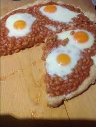

Recetario
Antojitos de media noche

Ingredientes
Elote
Nemo
Caldo de pollo de hace 5 años
Jitomate
Gusanos
Frijoles
Agua
Proceso
- Pon a herbir agua en una olla
- Cuando el agua hierba mete el pollo muerto de hace 5 años en la olla
- Ponle elote partido de hace 1 año
- Pica jitomate en trozos pequeños y anadelos al caldo
- Agregale al caldo los frijoles del refrigerador del mes pasado
- Mezcla bien todo y deja 10 minutos mas
- 5 minutos antes de sacar el caldo agrega gusanos de la tierra ya previamente labados
- Deja otros 5 minutos mas la olla en el fuego
- Sirve en un plato
- Agrega a nemo de decoracion
Antojitos de noche
Ingredientes
- Elote
- Mono
- Agua
- Gallo
Proceso
poner a herbir agua
Cuando el agua hieba agregar gallo
Despues cuelas el gallo y te quedas con el liquido
Dejar la olla al fuego 5 minutos mas
Agregar un Mono previamente labado
Agregar un elote
Servir en un plato con caldo y el mono
Daifrutar del platillo
Antojitos de Madrugada

Ingredientes
- Base de mas para pizza
- Frijoles
- Huevo
- Queso
- Horno
Proceso
- Prender el horno a 190°
- Poner la base de la masa para pizza en la mesa
- Poner una base de frijoles
- Ponerle salsa y queso a la base de la pizza
- Poner otra base de frijoles a la base de la pizza
- Poner 3 huevos en el centro de la pizza
- Meter la pizza al horno durante 30 minutos
- Sacar la pizza
- Partirla y respartirla